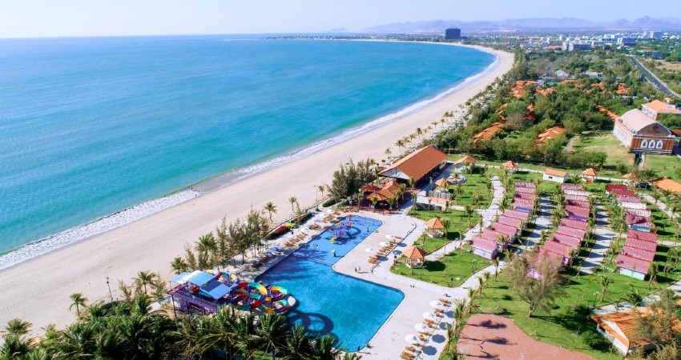

Trang Chủ
Lịch Sử
Phong Cảnh
Ẩm Thực
Khách Sạn

Một số khách sạn giá hợp lý và ở chất lượng dưới đây - thông tin tham khảo.
Phan Rang – Tháp Chàm (Ninh Thuận) Khách sạn thân thiện với gia đình Phan Rang
Tháp Chàm (Ninh Thuận) Khách sạn có bãi để xe
PhanRangthapchàmkhách sạn có bãi để xe miễn phí
Phan Rang – Tháp Chàm (Ninh Thuận) Khách sạn có quầy lễ tân 24h
Phan Rang – Tháp Chàm (Ninh Thuận) Khách sạn có khu vực hút thuốc
Phan Rang – Tháp Chàm (Ninh Thuận) Khách sạn có đưa đón sân bay
Phan Rang – Tháp Chàm (Ninh Thuận) Khách sạn có tiện nghi nấu nướng ngoài trời
Phan Rang – Tháp Chàm (Ninh Thuận)Khách sạn có bếp trong phòng
Phan Rang – Tháp Chàm (Ninh Thuận) Khách sạn gần vùng câu cá
Phan Rang – Tháp Chàm (Ninh Thuận) Nhà dân địa phương
Phan Rang – Tháp Chàm (Ninh Thuận) Khách sạn sang trọng
Phan Rang – Tháp Chàm (Ninh Thuận) Khách sạn nam sao
Phan Rang – Tháp Chàm (Ninh Thuận) Khách sạn cấm hút thuốc
Phan Rang – Tháp Chàm (Ninh Thuận) Khách sạn có cho thuê xe đạp
Phan Rang – Tháp Chàm (Ninh Thuận) Khách sạn có bể bơi
Phan Rang – Tháp Chàm (Ninh Thuận) Khách sạn có spa
Phan Rang – Tháp Chàm (Ninh Thuận) Khách sạn có bồn sục
Phan Rang – Tháp Chàm (Ninh Thuận) Khách sạn có tiện nghi làm việc
Phan Rang – Tháp Chàm (Ninh Thuận) Khách sạn có phòng tập
Phan Rang – Tháp Chàm (Ninh Thuận) Khách sạn có hộp đêm
Phan Rang – Tháp Chàm (Ninh Thuận) Khách sạn có bể bơi trong nhà
Phan Rang – Tháp Chàm (Ninh Thuận) Khách sạn gần sân gôn
Phan Rang – Tháp Chàm (Ninh Thuận) Nhà khách
Phan Rang – Tháp Chàm (Ninh Thuận) Khách sạn thân thiện với vật nuôi